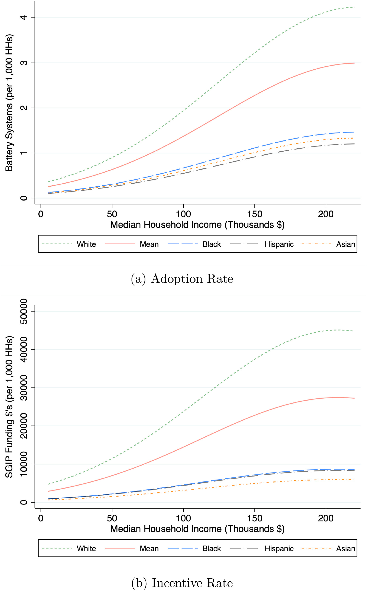

Importance of Energy Storage
Energy storage is one of the major technologies being deployed in the hopes of decarbonizing our electricity sector. According to a study conducted by the National Renewable Energy Lab (NREL), storage costs are projected to decline by as much as 58% by 2050, making this technology, in theory, more viable for widespread adoption.1 Utilities, energy producers, local, and state governments are banking on adoption of behind-the-meter (BTM) battery energy storage systems (BESS) to reduce the demand for electricity on our aging grid infrastructure and to meet climate resiliency goals. Behind-the-meter battery energy storage systems refers to “customer-sited stationary storage systems that are connected to the distribution system on the customer’s side of the utility’s service meter”.2 For the sake of brevity, I will refer to behind-the-meter battery energy storage systems as “batteries” or “energy storage” throughout this discussion.
SGIP and Equity
In an effort to promote distributed energy resources (DER), which includes batteries, the California Public Utilities Commission (CPUC) created the Self Generation Incentive Program (SGIP). In September of 2019, the CPUC announced that it would allocate additional funding for the “Equity” budget category and create a new “Equity Resiliency” budget category. The CPUC states that the goal for the equity budget is to ensure a “significant portion of the SGIP budget is reserved for customer projects in disadvantaged and low-income communities”3, whereas the goal for the equity resiliency budget is to help communities that are in high fire risk areas, people that are on a medical baseline rate (reduced energy rates for those that use more energy due to medical conditions), and those with “serious illness or condition that could become life threatening if service is disconnected”.4 Studies have also shown that there is a disproportionate effect of Public Safety Power Shutoffs (PSPS) on lower socioeconomic communities.5 Having a battery could help reduce some of the resulting negative impacts of power outages on these communities (e.g. food insecurity). Although this policy has good intentions, there are still socioeconomic disparities in SGIP utilization and subsequent energy storage adoption in California. (see Figure 1)

Figure 1. Battery adoption rate and SGIP incentive rate by median household income and race/ethnicity. From David P. Brown. “Socioeconomic and demographic disparities in residential battery storage adoption: Evidence from California.” Energy Policy, Volume 164, 2022, 112877, ISSN 0301-4215
Data Behind Program Eligibility
Eligibility for residential SGIP projects under the equity funding category are partly based on income limits from the U.S. Department of Housing and Urban Development (HUD).6 HUD income limits are calculated based on American Community Survey (ACS) data,7 which collects data by taking a random sample of addresses to survey. Basing eligibility requirements on this data bring up questions of how the data is collected and issues of missing data. Data may be missed by systematically not including certain addresses or there may be inaccurate data if addresses incorrectly report income. This could be due to a number of reasons such as language barriers and self reporting issues. Eligibility for SGIP under equity funding is also based on whether you are located in “Indian Country in California” as defined by 18 USC 1151.8 While the inclusion of these lands can be beneficial, there are still disputes around federal reservation status without which indigenous communities might not be able to take advantage of the rebate.
Eligibility for residential SGIP projects under the equity resiliency funding are partly based on if your home is located in a high fire risk area or area that experienced two or more PSPS events.9 The development of the High Fire Threat District (HFTD) map included use of various forecasting models such as the Weather Research and Forecasting (WRF) model and the GridFire model.10 Aside from the potential for inaccuracies in the map due to the massive amounts of data being collected, calculated, and spatially resolved, the use of modeling tools like these call into question who determines what goes into and what is excluded from the model? How are the biases of the creators of these models affecting the outcome of the map and subsequent eligibility in SGIP?
Community Involvement
In order to increase participation in the equity SGIP budget, the CPUC did seek comments from different organizations, utilities, businesses, and community choice aggregations (CCAs). However, getting input from individual community members that are supposed to be benefiting from this policy is key in ensuring participation in this program. As we have seen with the Guadalupe Community Air Monitoring Project,11 community involvement and ownership is crucial in creating robust programs that create substantive change. Not only should community members voice feedback, but they should also be involved throughout the whole information value chain. This means active participation of community members in the upstream processes of data capture and processing through citizen science that will inform decisions on eligibility requirements and program implementation. In addition to that, they should be integral in the decision making process for policy and dissemination of the program. Having the community perspective in policy decisions will also help the CPUC take a step back and evaluate other more foundational aspects of the policy to boost enrollment (i.e. looking beyond eligibility requirements). For example, this program requires the battery be installed before receiving funding, which is a tough upfront cost for lower income communities to face. Additionally, homeownership is key in getting a battery installed. Many of the target individuals for the equity budget are renters, and therefore need to convince their landlords to first install the battery and then apply for the rebate. Lastly, from personal experience working at a solar company and helping customers apply for this program, the process to submit and receive the rebate is very lengthy and requires jumping through a lot of hoops. Is there something that can be done to lower these barriers to participation and ultimate adoption of batteries?
Challenges and Next Steps
One other challenge the program faces is the fact that data is evaluated and decisions are made on a statewide level. Organizing and managing citizen science on the neighborhood level is helpful to get finer resolution data and solutions that work for specific communities, but aggregating it back up to policy on the state level could prove difficult. The CPUC could consider varying program requirements based on different locations or groups in California based on community feedback. Closer examination of the data utilized for SGIP brings up concerns and questions around missing data, inaccurate data, and biased modeling that may affect target communities’ participation in the program. To combat these concerns, the CPUC should employ citizen science methods and involve community members to create, adjust, and remove parts of the policy to ensure real change.
References
Footnotes
Cole, Wesley, Will A. Frazier, and Chad Augustine. “Cost Projections for Utility-Scale Battery Storage: 2021 Update.” Technical Report. Golden, CO: National Renewable Energy Laboratory, 2021. https://www.nrel.gov/docs/fy21osti/79236.pdf.↩︎
BE Storage. “Behind-the-Meter Battery Energy Storage: Frequently Asked Questions.” Nrel.gov, NREL, 2021. https://www.nrel.gov/docs/fy21osti/79393.pdf.↩︎
CPUC. (2019, September, 18). Decision establishing a self-generation incentive program equity resiliency budget, modifying existing equity budget incentives, approving carry-over of accumulated unspent funds, and approving $10 million to support the San Joaquin Valley disadvantaged community pilot project. Decision 19-09-027. Ca.gov. https://docs.cpuc.ca.gov/PublishedDocs/Published/G000/M313/K975/313975481.PDF↩︎
CPUC. (2019, September, 18). Decision establishing a self-generation incentive program equity resiliency budget, modifying existing equity budget incentives, approving carry-over of accumulated unspent funds, and approving $10 million to support the San Joaquin Valley disadvantaged community pilot project. Decision 19-09-027. Ca.gov. https://docs.cpuc.ca.gov/PublishedDocs/Published/G000/M313/K975/313975481.PDF↩︎
Vilgalys, Max. “Equity and Adaptation to Wildfire Risk: Evidence from California Public Safety Power Shutoffs.” (2022).↩︎
SGIP Program Administrators. (2022). “2022 SGIP Handbook V3”. Retrieved from https://www.selfgenca.com/home/resources/↩︎
PD&R EDGE. “How Are HUD’s Income Limits Calculated?: HUD USER.” How Are HUD’s Income Limits Calculated? | HUD USER, 2015, https://www.huduser.gov/portal/pdredge/pdr_edge_trending_032315.html.↩︎
SGIP Program Administrators. (2022). “2022 SGIP Handbook V3”. Retrieved from https://www.selfgenca.com/home/resources/↩︎
SGIP Program Administrators. (2022). “2022 SGIP Handbook V3”. Retrieved from https://www.selfgenca.com/home/resources/↩︎
CPUC. (2016, May, 26). Order Instituting Rulemaking to Develop and Adopt Fire-Threat Maps and Fire-Safety Regulations. Decision 16-05-036. Ca.gov https://docs.cpuc.ca.gov/PublishedDocs/Published/G000/M162/K550/162550016.PDF↩︎
Hodgson, Mike. “Grant for $300K to Increase Air Monitoring in Guadalupe Neighborhoods.” Santa Maria Times, 24 Mar. 2022, https://santamariatimes.com/news/local/grant-for-300k-to-increase-air-monitoring-in-guadalupe-neighborhoods/article_be676173-2251-5c00-8644-65c742b8d472.html.↩︎
Citation
@online{lam2022,
author = {Michelle Lam},
title = {Environmental {Justice} and {Data} {Behind} {Battery}
{Rebates} in {California}},
date = {2022-12-07},
url = {https://michellelam777.github.io/posts/2022-12-07-sgip-data-ethics/},
langid = {en}
}